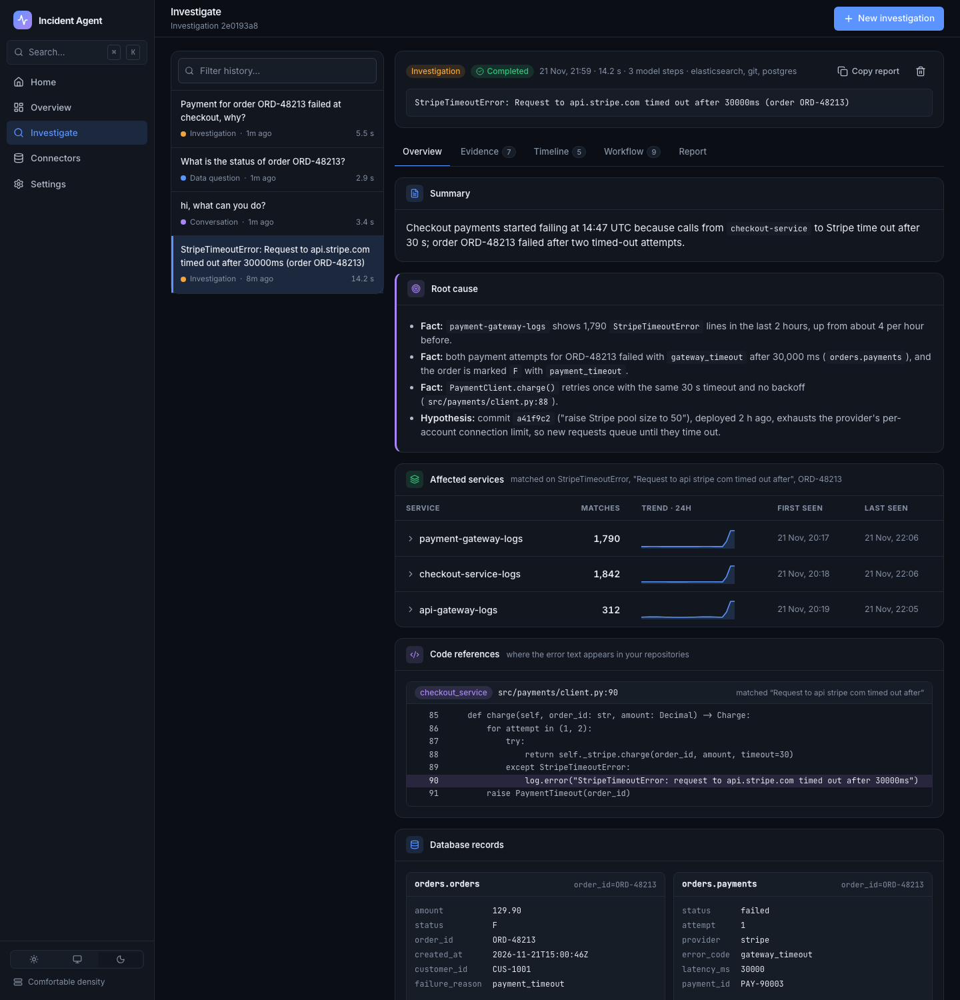
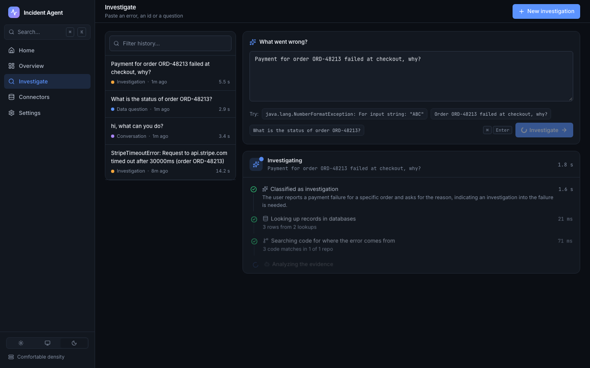
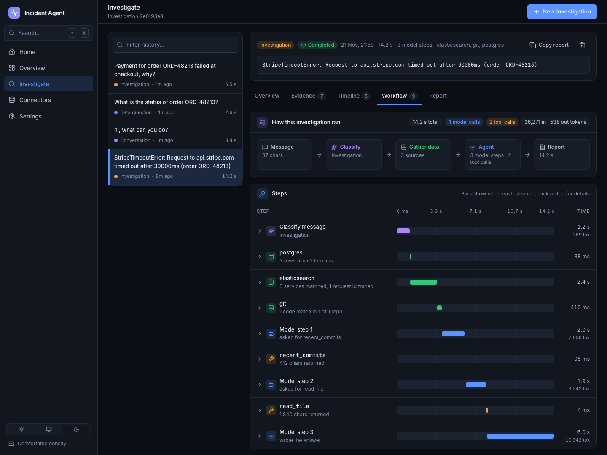
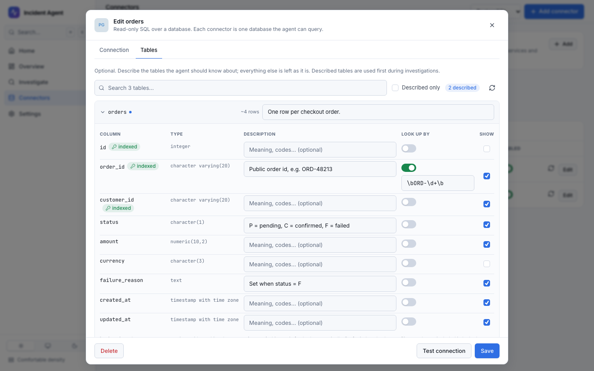
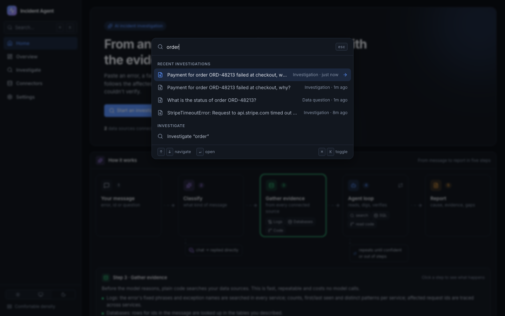

Paste an error, a failing id or a question. Incident Agent searches your logs, databases and code, follows the affected request across services and writes a report — summary, root cause marked fact or hypothesis, a UTC timeline, and what it couldn't verify.

Plain code gathers the evidence first — fast, repeatable, no model calls. The model then reasons over it and uses tools only to fill gaps.
An error, a stack-trace line, a failing id or a question.
Investigation, data question or chat — so a greeting never triggers a log search.
Error occurrences per service, request traces, database rows, the code line.
Reads the evidence, calls tools to dig deeper, until confident or out of steps.
Summary, root cause (fact / hypothesis), UTC timeline, evidence gaps.
Everything an on-call engineer would check by hand — done in seconds, shown as evidence you can verify.
Steps stream in as they happen — classifying, searching logs, looking up records, reading code — each ticked off with what it found.

Every claim is marked fact or hypothesis and backed by the data it came from.
A trace of every step: model calls and tokens, tool calls with arguments and results, timings, failures.

Tables and log groups load live from the source; add a note where it helps, mark lookup columns, leave the rest. No YAML.

A command palette for every page and action — or paste an error straight into it.

Add data sources in the UI; credentials are encrypted. Without descriptions the agent still finds its way.
Error occurrences across services, request traces, index mappings. Finds the right index groups by itself.
Read-only SQL over any number of databases; automatic row lookups for ids in your message.
Code search, file reading and recent commits — local checkouts or cloned remotes.
A plugin is one module: create_plugin(options) → tools + prefetch.
Screenshots use example data from a demo shop.
Needs Python 3.11+, uv, Node 20+ (to build the UI once) and a local PostgreSQL for the app's own data.